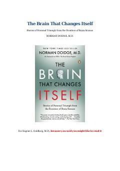

TBInson miyasining o'zgarish va yangilanish qobiliyati haqidagi ilmiy asar.
Ushbu kitob inson miyasining o'z tuzilishi va vazifalarini o'zgartirish qobiliyati — neyroplastiklik haqidagi inqilobiy kashfiyotlarni hikoya qiladi. Muallif miya shikastlanishlari, nevrologik muammolar va o'rganish qiyinchiliklarini yengib o'tgan insonlarning hayotiy misollari orqali ilm-fan chegaralaridagi yangi yutuqlarni ochib beradi.